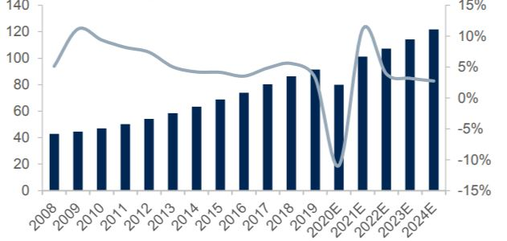
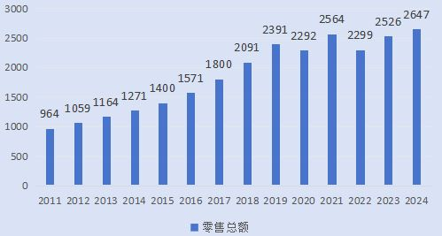
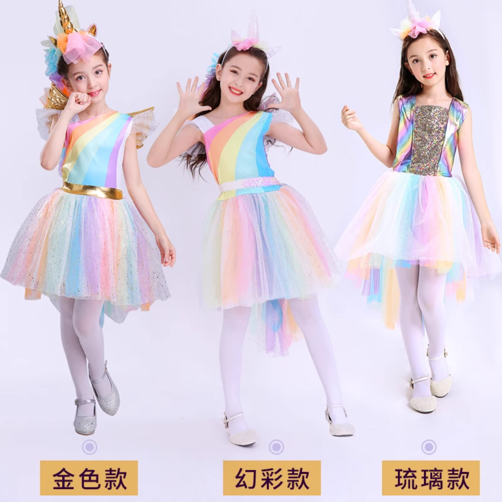
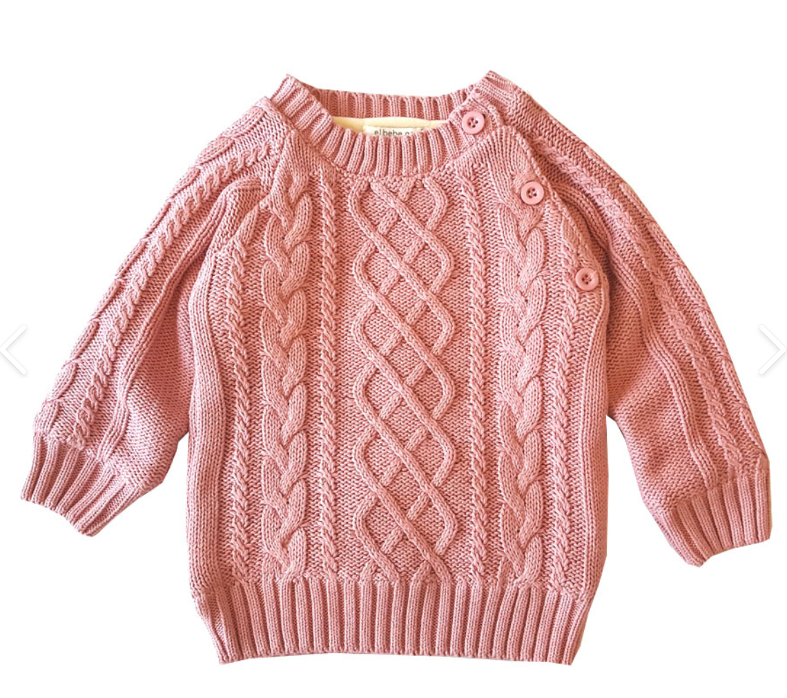

- 市场趋势
- 行业资讯
- 政策法规
- 展会信息
- 市场分析
市场趋势
2025年童装市场规模
童装消费增速
线上销售占比
童装出口额
童装市场规模趋势（2011-2024）

童装品类销售占比

热门趋势
可持续环保材料
有机棉、再生纤维等环保材质童装需求大幅增长，循环织物和生物基面料成为主流。消费者环保意识和可追溯需求明显提高。
智能功能性服装
智能温控、UV监测、生长可调节等科技功能融入童装，同时结合时尚设计，满足现代父母对实用性与美观的更高要求。
虚实融合购物体验
AR/VR虚拟试衣技术普及，数字化定制服务受到欢迎。元宇宙童装体验店提升购物乐趣，社交媒体短视频直播成为主要营销渠道。
文化融合创新设计
传统文化元素与国际时尚潮流融合，现代美学重构传统图案和剪裁。特色文创IP童装产品兴起，文化自信带动高端消费。
智能供应链管理
区块链透明供应链追溯系统普及，AI预测需求与柔性生产相结合，极大缩短产品从设计到上架时间，小批量个性化定制成为可能。
行业资讯

2025年童装行业发展报告发布，智能科技融合成为主流趋势
中国服装协会发布的《2025年童装行业发展报告》显示，生物可降解材料、智能穿戴技术以及个性化定制成为行业三大增长点，消费者对产品功能性与环保性要求持续提高...

全球童装可持续发展标准更新，碳足迹标签强制执行
国际纺织服装联盟发布新版《全球童装可持续发展标准》，要求所有童装产品必须标注碳足迹数据，并逐步淘汰无法达到再循环标准的合成材料...

织里智能童装产业园正式投产，年产能突破2亿件
织里智能童装产业园投资50亿元打造的智能制造基地正式投产，引入全自动裁剪系统、机器人缝制线和AI品控系统，产线效率较传统工厂提升3倍，能耗降低40%...

全球首个童装元宇宙展示平台上线，虚拟试衣体验革新销售模式
由织里镇数字经济促进中心联合多家企业开发的童装元宇宙展示平台正式上线，消费者可通过3D扫描创建虚拟替身，实现高精度在线试衣，首月注册用户突破百万...
政策法规
《纺织服装产业绿色创新发展规划（2025-2030）》
工信部发布《纺织服装产业绿色创新发展规划》，提出到2030年，建成一批绿色零碳智能工厂，实现全行业碳排放强度下降50%，原材料循环利用率达80%以上...
《智能儿童服装技术规范与安全评估标准》（GB 42503-2025）
国家市场监督管理总局发布《智能儿童服装技术规范与安全评估标准》，首次对融入电子元件、智能传感器的童装产品安全性能和功能要求进行规范，将于2025年9月1日起实施...
《织里镇童装产业数字化转型与品牌国际化战略（2025-2030）》
织里镇政府发布新一轮发展战略，设立100亿元产业基金，聚焦"数字化制造链、智慧供应链、国际品牌链"三链联动，打造全球领先的智能童装制造中心...
《全球纺织品生命周期责任法案》
联合国环境规划署与世界贸易组织联合发布《全球纺织品生命周期责任法案》，要求所有服装制造商承担产品全生命周期责任，建立完整回收体系，逐步禁止使用不可降解材料...
《儿童服装品牌国际化发展支持计划》
商务部联合财政部发布《儿童服装品牌国际化发展支持计划》，设立50亿元专项资金，支持本土儿童服装品牌"走出去"，在境外设立品牌店铺、开拓国际市场...


展会信息
2025年重要展会日程
2025中国国际儿童时尚周
上海国家会展中心
2025全球智能童装与可持续发展博览会
杭州国际博览中心
2025 CBME中国孕婴童展
上海新国际博览中心
2025织里国际童装博览会暨元宇宙服装设计大赛
湖州织里智慧童装产业园
2025广州国际童装展
广州中国进出口商品交易会展馆
2025亚洲童装与儿童生活方式展
新加坡滨海湾金沙会展中心
2025深圳国际童装产业博览会
深圳会展中心
重点展会推荐
市场分析
童装市场规模
童装企业数量
童装消费频次
人均消费金额
环保材质占比
智能童装渗透率
童装市场细分结构
2025年童装市场细分结构中，智能科技童装占比快速增长至15.8%，休闲童装占比32.5%，学生装占比21.7%，婴幼儿服装占比17.2%，运动童装占比8.8%，礼服/正装占比4.0%。
童装销售渠道占比
2025年线上渠道占比达到58.3%，其中社交电商占比25.5%，传统电商平台占比22.8%，元宇宙购物占比10.0%；线下渠道中专卖店占比18.6%，百货商场占比10.5%，超市/卖场占比7.4%，其他渠道占比5.2%。
童装消费人群年龄分布
25-35岁年轻父母仍是童装消费的主力军，占比达51.5%，其次是35-45岁中年父母（27.3%）和祖辈消费者（15.8%），值得注意的是，青少年自主选购比例上升至5.4%。
童装品牌市场份额
品牌集中度持续提高，前十大品牌市场份额合计约36.8%，其中本土品牌占比22.5%，国际品牌占比14.3%，第一梯队品牌市场份额均超过3%。
童装产品材质分布
有机棉占比24.5%，再生纤维占比18.3%，生物基新型材料占比4.0%，传统棉质占比22.6%，合成材料占比18.2%，混纺面料占比12.4%。环保材质比例首次超过传统材料。
全球童装市场地区分布
中国市场占比达到全球的28.6%，欧洲占比24.3%，北美占比22.5%，东南亚占比10.8%，拉丁美洲占比5.7%，中东和非洲占比4.8%，其他地区占比3.3%。